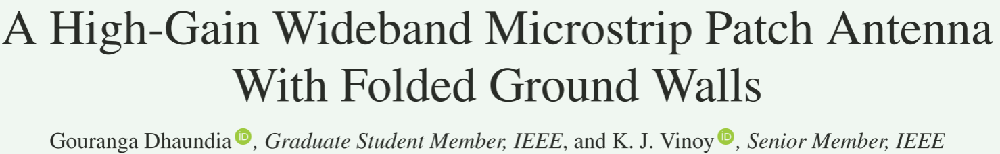
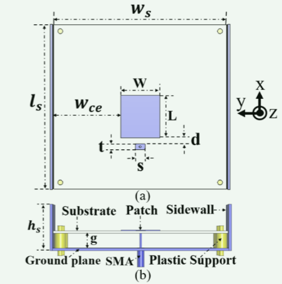
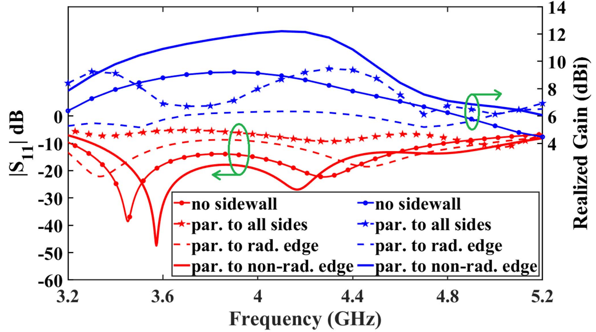
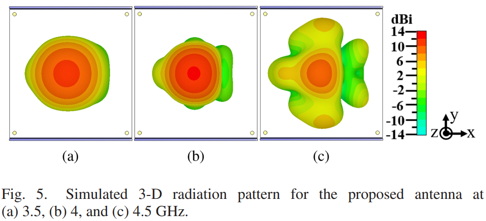
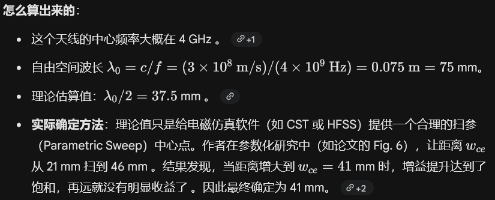
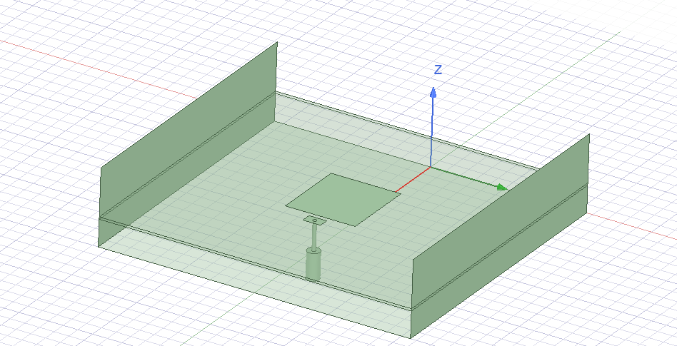
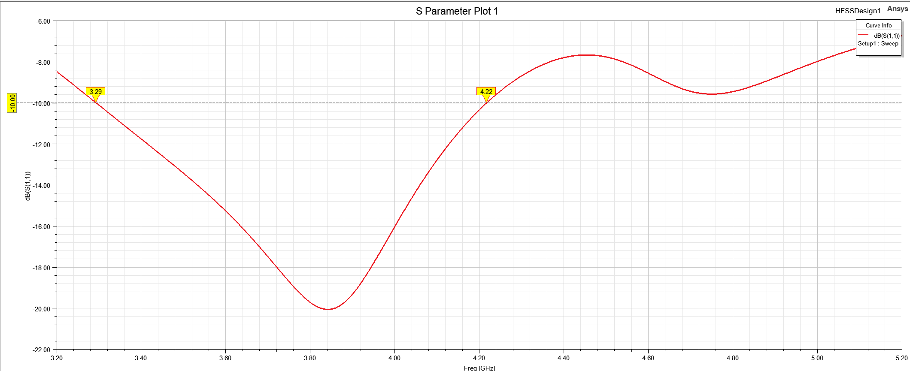
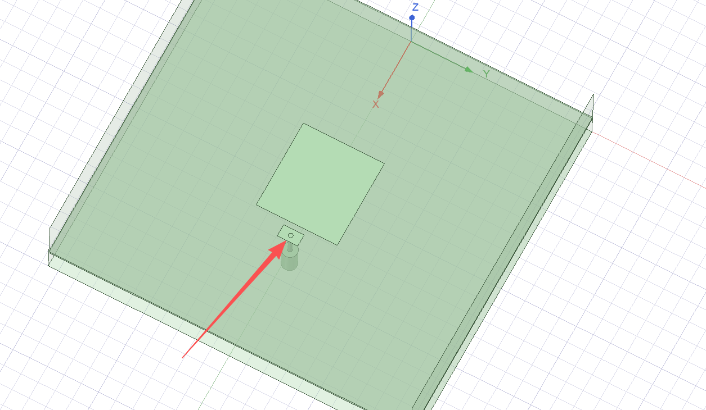
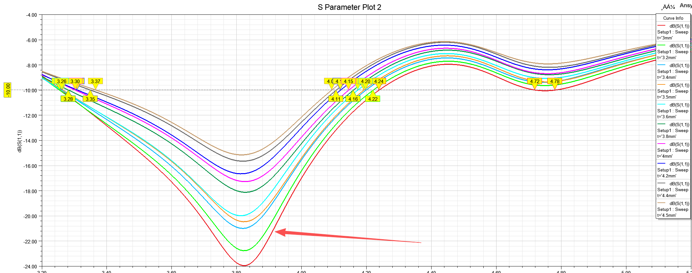

微带贴片天线
一种折叠式地面墙高增益宽带微带贴片天线




摘要
-这封信提出了一种在不影响带宽的情况下提高悬浮基片上微带贴片天线增益的方法。天线的接地面向上折叠以形成与非辐射边缘平行的侧壁。确定了贴片边缘的距离和侧壁的高度以最大化天线的辐射性能，这种方法可以得到优于12dBI的峰值增益和大约45%的阻抗带宽。仿真研究表明，平行于辐射边缘的侧壁会降低天线的性能。
创新点
为什么能提高增益？
矩形贴片天线边缘的电磁场分布特性。
辐射边 vs. 非辐射边：在矩形贴片天线中，平行于馈电方向的边缘称为“非辐射边缘（H面）”，其场分布为横电波（TE）；垂直于馈电方向的边缘称为“辐射边缘（E面）”，其场分布为横磁波（TM） 。正常情况下，辐射边缘产生的辐射在正前方（法向）是同相叠加的，而非辐射边缘产生的辐射在正前方是反相抵消的 。
当把金属墙平行于非辐射边缘放置时，奇妙的事情发生了。撞击到这些侧壁上的电流变成了同相（in phase） 。因此，这些由侧壁产生的辐射不仅没有抵消，反而与主辐射同相叠加，直接增强了正前方（boresight direction）的辐射能量 。
天线结构及功能
介质基板与辐射贴片 (Substrate & Patch)：这是天线产生电磁辐射的主体。
电容性馈电带与 SMA 接头 (Capacitive Feed Strip & SMA Connector)：在矩形辐射贴片旁边放置了一个电容性馈电带 ，并使用一根加长型 SMA 探针（直径 1.3 mm）与之相连进行馈电 。这种馈电方式主要用于抵消探针带来的电感效应，是实现宽带阻抗匹配（约 40% 带宽）的关键 。
1 | 因为空气层很厚（9 mm），这意味着从底部 SMA 接头连接到顶部贴片的金属探针（Probe）非常长。长探针会引入巨大的寄生电感，导致严重的阻抗失配（天线“罢工”）。为了解决这个问题，作者没有把探针直接焊在主贴片上，而是焊在了一个独立的小金属块（馈电带）上，这个小金属块与主贴片之间留有一道 d=1.53 mm 的缝隙 。这道缝隙形成了一个串联电容。这个电容恰好抵消了长探针带来的电感效应。更巧妙的是，这种 LC 电路结构会引入额外的谐振点，当这些靠得比较近的谐振点连在一起时，就形成了一个宽广的工作频带。 |
空气悬浮层 (Air Gap)：介质基板并没有直接贴在接地面上，而是通过塑料支撑柱（Plastic Supports）悬浮在接地面上方，两者之间有一个 g=9 mm 的空气层 。降低了等效介电常数，从而极大拓宽了天线的阻抗带宽 。
折叠接地侧壁 (Folded Ground Sidewalls)：将底部的接地面在距离贴片边缘约 λ0/2 的位置向上折叠，形成高度约为 λ0/3 的垂直金属墙 （其中 λ0 为中心频率的自由空间波长 ）。这是提升增益的“秘密武器”。这些侧壁仅平行于贴片的非辐射边缘放置，它们能够捕获并重新定向电磁波，从而增强主瓣方向的辐射 。
对侧壁反射叠加的理解
1 | 在天线设计中，引入反射板或侧壁的核心目的是让电磁波在期望的方向上发生相长干涉（同相叠加），而在不需要的方向上相消。 |

壁高度：为什么是 λ0/3？(hs=25.8 mm)
侧壁的作用类似于一个微型的“喇叭”或“反射腔”，用于截获向侧面漏射的能量并将其导向正前方。
原理解析：墙如果太矮，拦不住侧向辐射，增益提升不明显；墙如果太高，一方面增加了天线的体积（违背了微带天线低剖面的初衷），另一方面过高的金属壁可能会引发高次模共振，反而破坏了辐射方向图的对称性或引发阻抗失配。
理论估算：λ0/3=75/3=25 mm 。实际确定方法：同样是通过参数扫描（论文 Fig. 7）。作者将高度 hs 从 13.8 mm 扫到 29.8 mm 。从结果图可以看出，当高度达到 25.8 mm 时，增益已经接近最大值，继续加高对增益的贡献微乎其微，对带宽也没有显著影响 。因此，出于尺寸优化的考虑，选定了 hs=25.8 mm 。
仿真记录

原参数仿真结果：

调整小贴片长度：

宽度为3mm的时候下降：

扫描参数2-3mm：